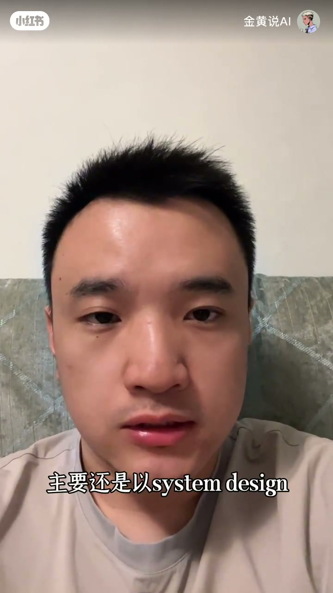

内容要点
「金黄说AI」约 2 分 54 秒竖屏口播：接上集找机会之后，讲述北美程序员回国后最近在面什么。大厂仍偏简历深挖与算法题；作者当前主战场是 AI 初创——笔试可长达一下午甚至近 10 小时，常见是把公司大项目交给你，考察用 AI 设计、落地与交付。正式面试继续深挖简历与场景题，并观察初创更要「多边形」能力（工程 + 产品/业务/AI）与创业价值观匹配。给北美朋友的核心建议：简历必须滚瓜烂熟；相对北美偏 system design + LeetCode，国内更抠「为什么这样做、思考如何复用」。
知识结构
续写回国求职故事；调侃评论区「小鲜肉/绞肉机」；切入「最近面试在面什么」。
大厂变化不大：深挖简历、偏 LeetCode；作者最近面得最多的是 AI 初创，题目五花八门。
先笔试再面试；笔试常要一个下午，最长近 10 小时：公司大项目交给你，看你如何用 AI 设计并交付。
面试仍深挖简历与场景题；AI 企业要多边形能力；还会问工程师职能观与是否适合高风险创业环境。
对北美朋友：简历讲到滚瓜烂熟（作者称 ROI 很高）；北美偏 system design + LeetCode，国内更强调可迁移的「为什么」。
回国面试的差异重点不在「会不会刷题」，而在是否能把简历故事讲透，以及是否扛得住 AI 初创那种超长项目笔试与多面考核——属作者近期经历分享，非全行业统计。
00:00–00:34开场：回国求职续集与面试主题
视频承接上一期「如何找机会」：作者继续讲北美程序员回国求职。评论区有人说「北美的小鲜肉没有感受过国内的绞肉机」——作者自称只听清「小鲜肉」三个字，心里暖暖的，并开玩笑欢迎继续这么叫。
随即点题：找到机会之后，国内流程通常会很快推进后续面试；本期聚焦「最近面试在面什么」以及他经历多场面试后的感受。
「今天我们来聊一聊面试……我们讲一讲我们最近的面试在面什么东西，以及我最近经历了这么多面试的感受。」
00:34–00:48大厂简历深挖 vs 转向 AI 初创
先谈大厂：作者认为和大厂以往差别不大——仍是深挖简历，并可能以 LeetCode 类题目为主。但他强调，自己现在面得最多的是 AI 初创企业，题目「非常杂、五花八门」。
「我现在面的主要最多的还是 AI 的一些初创企业……面的东西是非常非常杂的，真的是五花八门。」
00:48–01:14AI 初创笔试：长作业式项目交付
初创侧会主动考察「AI 的使用」。常见流程是面试前先做笔试，过了才进入面试。许多笔试非常长：可能要一个下午；作者提到最长的一份估计接近 10 小时。
题型多为：把公司想解决的问题或一个较大项目交给你，看你会怎么用 AI 去设计、落地，再交付成果。这不是短答题，而是接近真实项目的作业。
「把他公司在想要解决或者说一个比较大的项目交给你，然后看你用 AI 会怎么去设计并且把它给落地，然后再交付。」
01:14–02:05简历深挖、多边形能力与价值观
进入面试后，主轴仍是简历深挖：不仅问做过什么，还问当时为什么这么做；并会基于履历出场景题（「如果发生这件事，你会怎么做」），也会穿插技术问题。
作者的观察是：更多 AI 企业要的是「多边形」能力——工程交付之外，还考察产品理解、业务理解，甚至对 AI 本身的理解。他被问过「如何看待 AI 时代工程师的职能」，以及企业间协作效率会如何改变。
另有一块他认为很重要：价值观题——考察你是否适合创业公司那种不确定性与风险更高的环境。
「他们需要的人员的能力是非常多边形的……不光会需要……工程上的交付能力，也要去考察……对产品的理解、对业务的理解，甚至对 AI 的理解。」
02:05–02:54给北美朋友的建议与中美对比
作者给其他北美朋友的建议很集中：一定要深挖自己的简历，讲到滚瓜烂熟——他认为这是 ROI 很高的准备，因为几乎任何公司都会问得很深。
对比：北美面试大多仍以 system design + LeetCode 为主；国内则更强调简历深挖——不但讲清做了什么，还要讲清为什么、当时思考是什么，以及如何把思考复用到其他场景。
片尾预告会持续更新国内求职近况与感悟，欢迎留言，并以「欢迎继续叫我小鲜肉」收束。
「北美那边的面试主要还是以 system design 加 LeetCode 为主……国内其实对于简历的深挖是特别理解的。」
